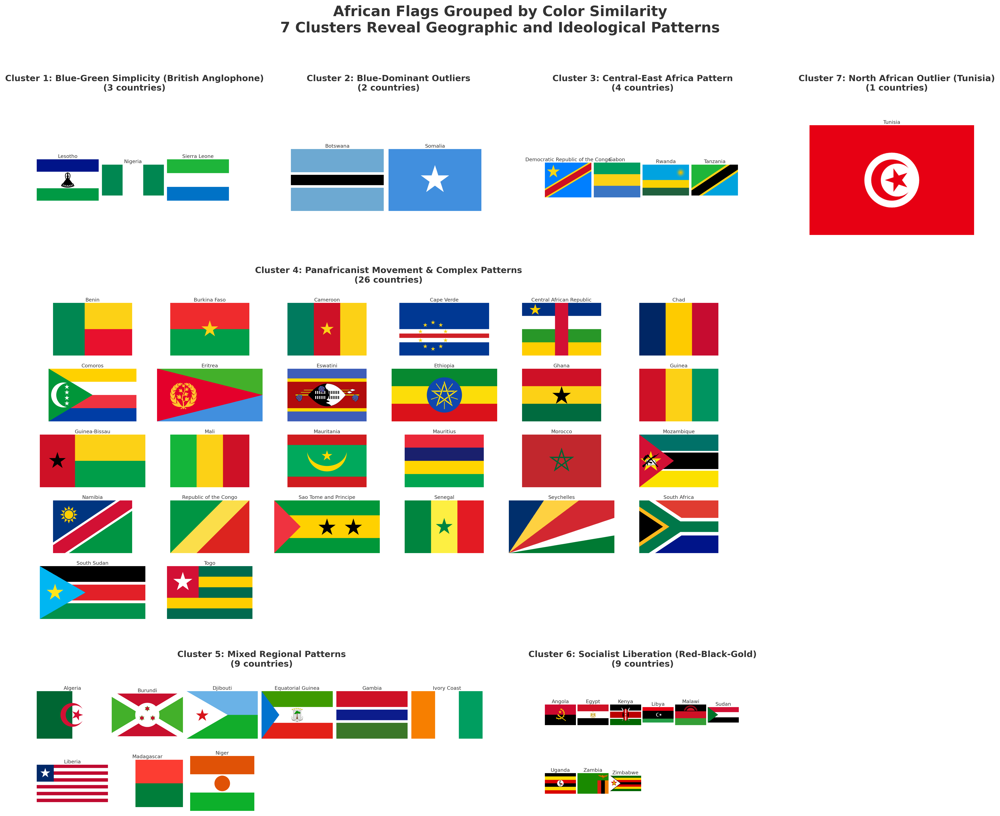
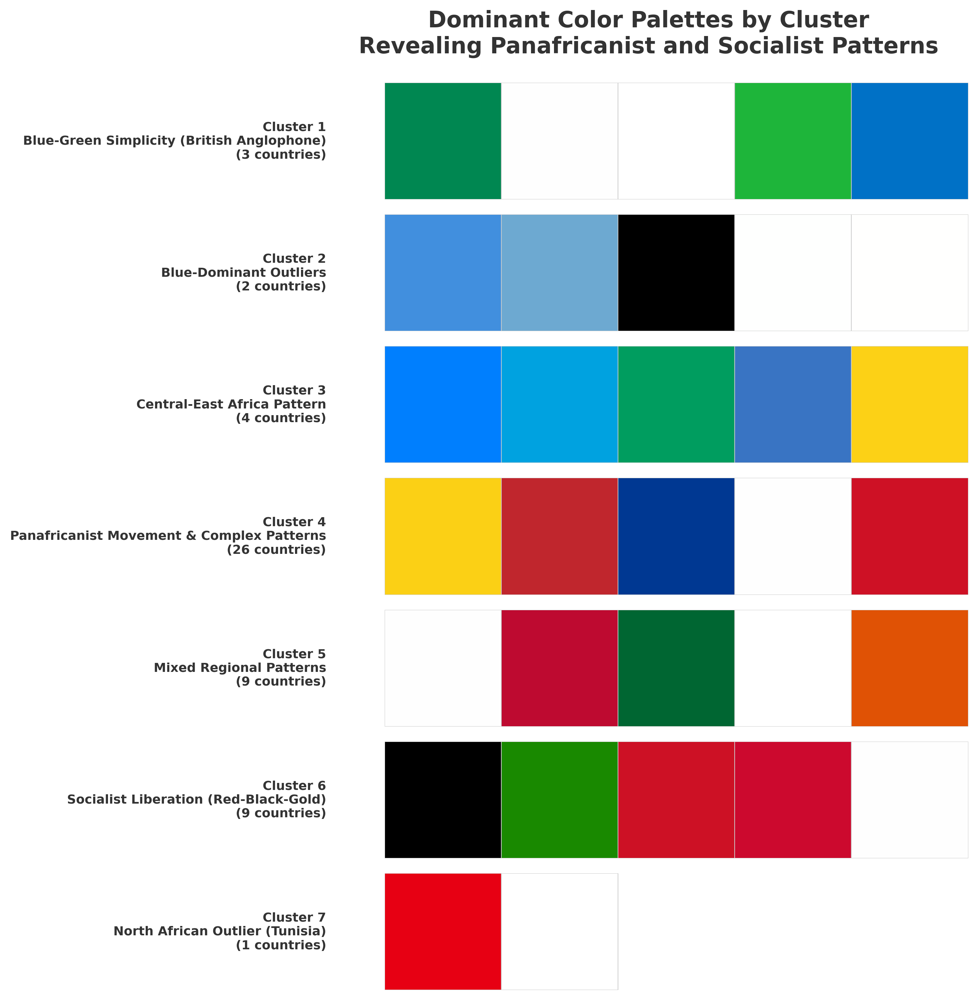
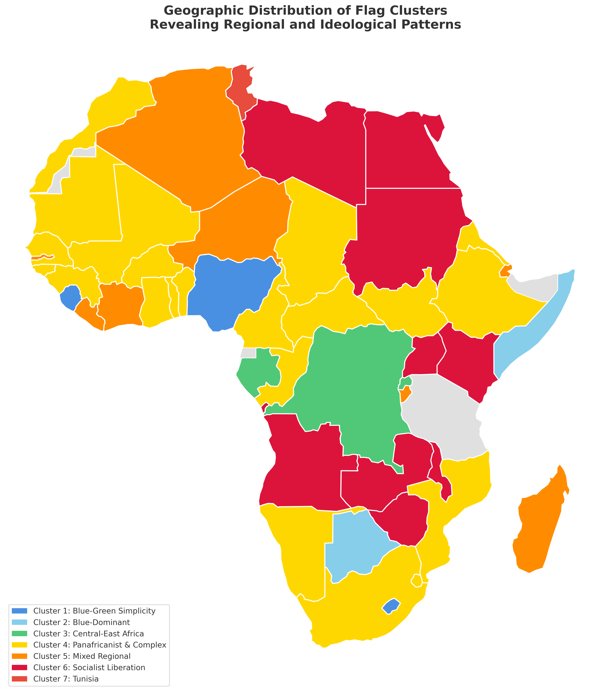
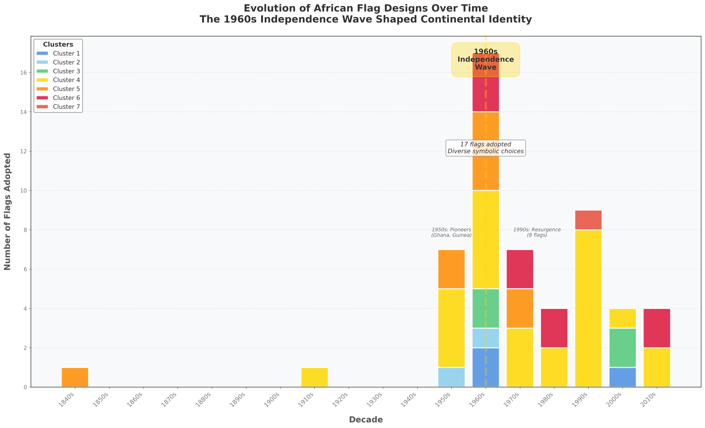
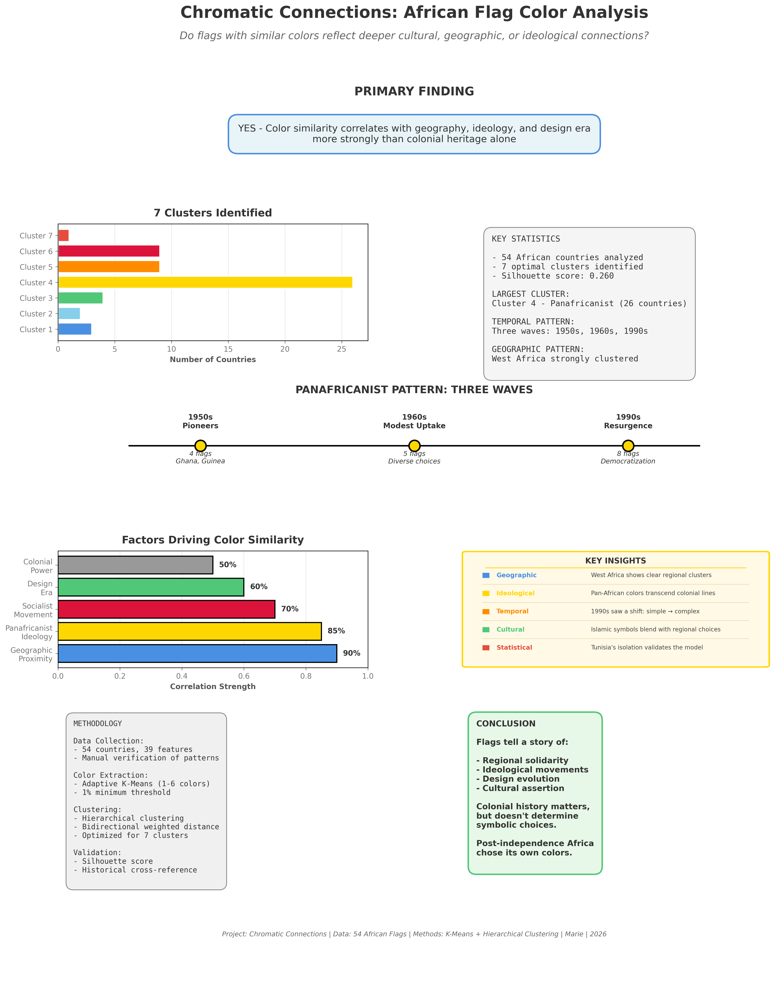

Press ESC or click outside to close
A data-driven exploration of color patterns, cultural identity, and post-colonial symbolism across 54 African flags
Each cluster groups flags sharing similar color compositions. Click a card to see all flags, or search any country below.
The cluster structure revealed visually. Click either image to expand full-screen.

Cluster 4 (Panafricanist) dominates with 26 countries — visually striking in yellow-red-green

Each row is a cluster's color fingerprint — note Cluster 6's distinctive black-green-red-gold pattern
Geographic proximity is the single strongest predictor of color clustering — outperforming shared colonial power, language group, and economic bloc membership.

Yellow = Panafricanist cluster · Red = Socialist Liberation · Orange = Mixed Regional
Flags adopted per decade, stacked by cluster. Hover any bar segment for details.

17 flags adopted in the 1960s alone — the 1960s Independence Wave shaped continental identity more than any other decade
Relative influence of each factor on cluster membership. Values represent comparative strength, not formal correlation coefficients.
Methodology, findings, key insights, and conclusion — click to expand full-screen.

Full research summary — methodology, cluster stats, Panafricanist three-wave pattern, factor correlations, and key insights
Post-independence Africa chose its own colors. Flags tell a story of regional solidarity, ideological movements, design evolution, and cultural assertion.
Colonial history matters — but geography and ideology matter more.